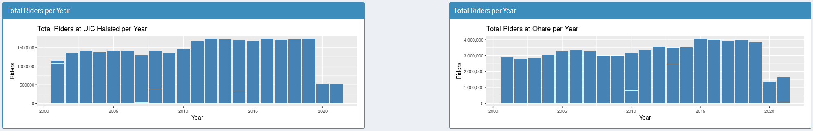
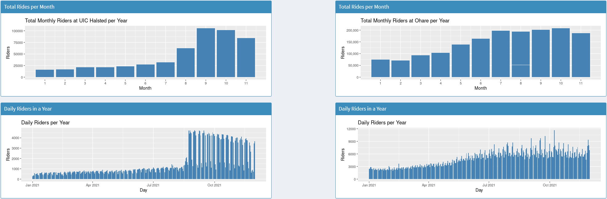
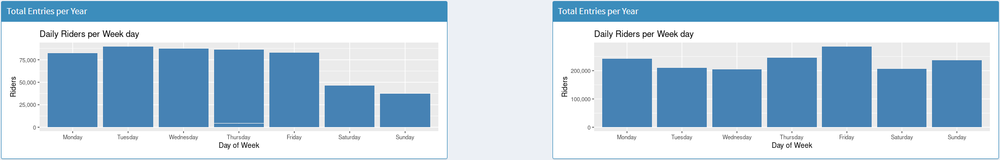
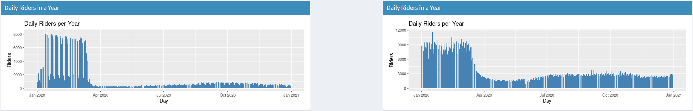
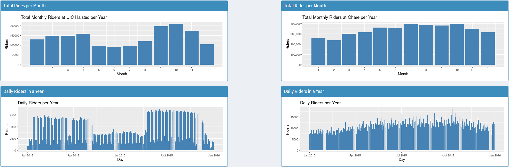

Student Choice - Airbnb in Sydney
CS 424 Student Choice - Kevin Elliott
The students choice project analyzes an online visualization and creates a critical discussion around the design and functionality of the visualization
What is the purpose of the visualization - The purpose of this visualization is to compare the many airbnb locations across the city of Sydney to certain surrounding variables such as distance to nearest train station, distance to nearest tourist attractions, number of bedrooms, ratings and total people accommodated. Besides the airbnb descriptors there is also a visualization of the individual neighborhoods and areas of Sydney and how where an airbnb is located affects its price. There is also data on how the pandemic has affected Sydney's airbnb market. In total, the purpose of this visualization is to provide the user with the tools to analyze the Sydney airbnb market and how it has changed since the pandemic.
What is the Data - The data is the listings posted to airbnb in Sydney, and each lists supplemental data such as price, distance to attractions/trains, number of bedrooms/guests. Other data that is not directly related to single listings are average pricing history for areas of the city, average pricing history per guest, and number of listings in an area
How was the data collected - data was collected from multiple sources as listed at the bottom of the visualization, the listings were collected from insiderairbnb.com, combined with kaggle.com data about sydney listings in particular. For the public transportation data it was taken the the australian government data portal opendata.transport.nsw.gov.au, and the suburbs and areas of the city were taken from the portal as well.
Who are the users that this visualization was made for - This visualization could be for tourists who want to see more about their options in Sydney while they plan a trip, or it could be for someone who wants to host an airbnb but does not know the market well. Of course it's also made for anyone who is interested in data visualizations as said by the author herself, since she doesn’t fit into either of the first two categories.
What questions do people want to ask - Some questions that people that want to buy an airbnb for a weekend or so ask are, how much will it be per night, how far is it from the beach or city, where is it in the neighborhood, is it a good deal compared to others, do they have time to wait on a decision or does it sell fast. Someone who is renting out an airbnb would want to know if they are in a common area to rent, how much similar listing go for, how far they are from attractions, how often people rent and if charging per person or in total changes things.
How can they find answers with this tool - Most of these questions have direct answers from the visualization, questions about pricing for certain areas can be found in the second map where hovering over a part of the city shows the median price, along with medians of an entire house or a private room. Finding distances can be found in the first map by hovering over a listing, which then shows distance to a nearby attraction (commonly a beach) and then distance to the nearest train station. To show if it's a good deal compared to others, you can use the graphing section and apply pricing/distance filters to fit what you are looking for, this yields the listings that are similar all together so comparing is much easier than one by one on a map. Using the Demand filter on the graph also shows how long a listing has been or has historically been up, with most ranging from 15 to 30 days. Pressing the flip button on the second map shows how listings change when showing total unit prices compared to single private room prices, which could be insightful to someone wanting to rent their place and needing to decide on what method to rent as.
What works - The two maps are certainly the highlight of the project, they have a clear function that is instantly recognisable. Neither overlap with each other on what they do either, with the first showing all the listings in the city and their individual stats, while the second covers the general trends of the areas and neighborhoods. Each map also has a level of interactivity that allows for more information to be displayed on demand, without cluttering the interface. Besides the maps, the graphs at the bottom of the page are great for showing the history of the listings, showing changes in data clearly and also providing explanations to the more notable data points. These graphs stay consistent in scale, colors, axis and labels throughout, making it easy to follow and extract information from.
What needs improvement - One part of the visualization that lacks clarity is the first graph which lets the user change the x and y axis to distance to beach vs price and so on. This visualization is very useful when looking at overall trends but that starts to break down a bit once someone wants to know more details than that. For example setting the x value to ‘Distance to nearest tourist attraction’ and y value to ‘price’ it's easy to notice the general trends, that the majority of listings are under $200 and as the distance gets closer to 0 that price gets closer to $200. However drawing the conclusion of the majority is about all you could reasonably come to since the concentration of points overlap so heavily that it's very hard to tell the difference between a high concentration vs a medium one. One possible remedy to this could be more space for the graph, as the page is set up there is room to expand without interrupting the flow, perhaps something similar to the graphs on the bottom of the page. Another aspect of the visualization that could use improvement is the use of the ‘i’ icon, some pretty key information to understanding the graphs is placed there which could certainly be more prominent on the page. For example the description of ‘demand’ is found in the popup for the first graph, showing the description of ‘days booked in a 30 day timeframe’. This might not be something that is initially what demand is assumed to mean by a user and could instead be placed in the graph description section with the other information on how to use it.
CS 424 Project 1 Interesting Data Points - After creating these data visualizations many interesting points can be located throughout the years and years of graphs. Initially I noticed the massive differences in riders between UIC Halsted and O’hare. UIC Halsted peaks at around 1.75 million yearly riders and has a low of 500 thousand riders, whereas O'hare has a peak of 4 Million riders and a low of 1.3 million riders. This massive difference makes sense given the fact that O’hare is an international airport, but it's still interesting to see just how vastly different the sample size is. Another data point I focused on was based around the UIC academic year, particularly fall and spring semesters. Both UIC and O'hare experienced an increase in ridership at the end of 2021 compared to the beginning but each had different growth rates. UIC had around 1,000 daily riders all throughout the year until in August where it shot up to around 4,000 average and slowly dropped to 3500 by the end of the year. This clearly aligns with the spring semester at UIC being online and the fall semester being in person, causing many students to take the train to class. O’hare on the other hand had a steady growth from 3,000 daily riders to 5-7,000 by the end of the year. Besides daily rides there is also the weekday travel data for each stop, UIC has the vast majority of its entries Monday through Friday with none of the days being a clear peak in entries. Weekends however accounted for far less, Sunday had less than half of the riders that any given weekday had and Saturday was not much higher with around 10% more. Looking at the two stops in relation to covid 19 also gives insight as to how it was handled at each stop. In January and February of 2020 daily riders at UIC were around 7,000 and 8,000 for O’hare, which is interesting because at that moment the two were pretty close in daily data. Both of them also experience a massive drop around April but the major difference is how far and steep that drop was. UIC Halsted immediately goes down to under 500 per day whereas O’hare over the course of a few weeks drops to about 1,500 and eventually climbs up to 3,000. The service that O’hare provides means that some people still need to be there and get on flights whereas most avoid flying for the time being. UIC can just move to online classes and suddenly no one needs to get on the train to get there and everything still functions despite the policy change. Looking back further to 2015 there are some trends that only appear at the UIC side and not O’hare. There are multiple dips in the daily rides per year graph that line up with May-Aug, December-January and a single week in March, which also perfectly aligns with the breaks in semesters and spring break for UIC. It's interesting to see just how much you can figure out about UIC and O’hare just by analyzing the CTA traffic of the stop attached to them. Images below: 1st: daily riders in 2020 2nd: Daily riders and monthly riders for 2015
 To try the project out yourself check out the github repository then install R, along with Rstudio and Shiny after all is installed, import this project as a shiny app